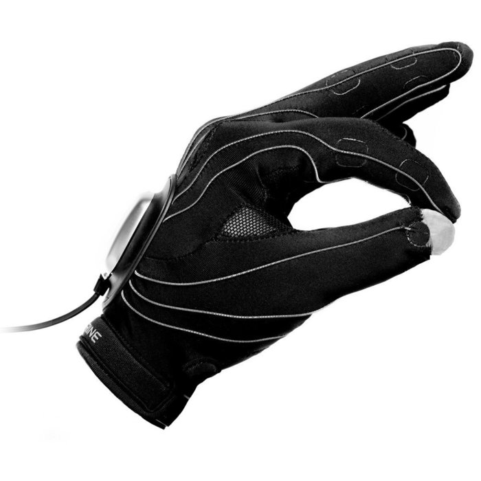
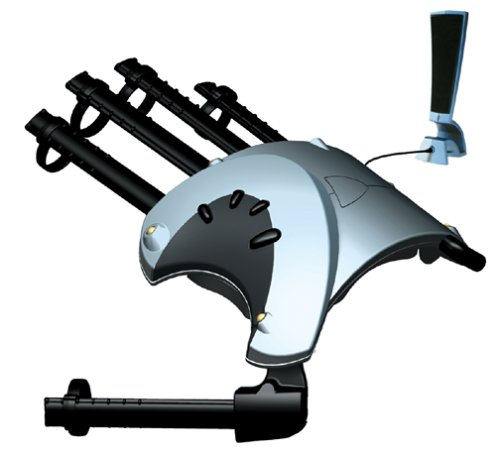
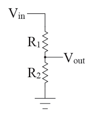
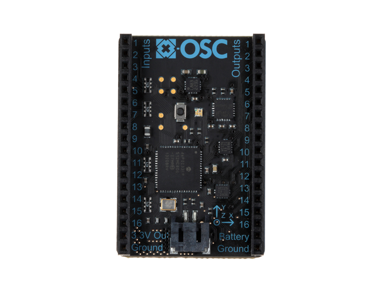

What's out there now?
Peregrine $150
- 18 Touch Points, 3 Activator Pads
- Enter commands and keyboard shortcuts
- Can use in addition to keyboard
Essential Reality P5 Gaming Glove $40
- 6 DOF at 45 hz
- Optical Tracking
- Bend Sensor at 60hz
- Wireless
- USB 1.1 compliant
StretchSense $800 2 stretch sensor kit
how to make an incredibly cheap pressure/bend sensor
WRONG
Redesign
How do we make this mean something to the Arduino?
Voltage Divider
R2: Bend Sensor
R1: Appropriately Matched Resistor for Sensor Range
Vout = Vin × R2 / (R1 + R2)
Vin: +5V
Vout: ~1-4V
< optimal range but good enough for me
Haptic Feedback
Spatially Transparent Electrotactile Display
Maglev Haptic Interfaces - Carnegie Mellon
Too many I/O's for Arduino?
Other Glove Projects
Tactile dataglove with fabric-based sensors
54 tactile cells allowing natural manual interactions to be captured
Fissure - VR Ableton Live Controller
Imogen Heap "The Gloves"
Laetitia Sonami The Lady's Glove
"The Gloves" Prototype WiFi Gloves Using x-OSC and x-BIMU
- good for gestures
- probably not great for VR because of drift and latency
- wireless and self-contained a plus
x-OSC ~$250
- 16 analog/digital inputs
- 16 PWM outputs (up to 50 mA per channel)
- 13 bit 400 Hz ADC
- Gyroscope, Accelerometer, Magnetometer on board
- Sends all data vis OSC messages over WiFi 54Mbps
esp8266 $3 unreliable WiFi board from China

ESP8266 WiFi Module Library
Paul M. Christian
paulmchristian@gmail.com
- https://github.com/meta-meta My Github